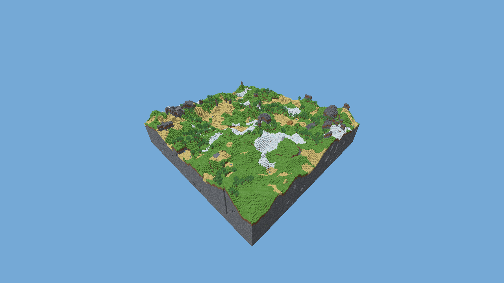

범위와 증거
- 청크 인덱스·희소 편집·경계 dirty·Greedy 메시·정적 충돌
- 평면 캐시, 비동기 I/O, 데이터/노드 수명 분리
- 정리 25·캐시 1,005·메시 502·동등성 534 검사, OS 재시작 복원
게임 플레이 증거

실제 렌더 청크 월드 화면. 캡처 자체는 성능 우위를 증명하지 않습니다.
성능 판정
미달: 무제한/VSync ON viewport P95 16.772–17.069ms는 16.7ms 목표에 반복 미달입니다.